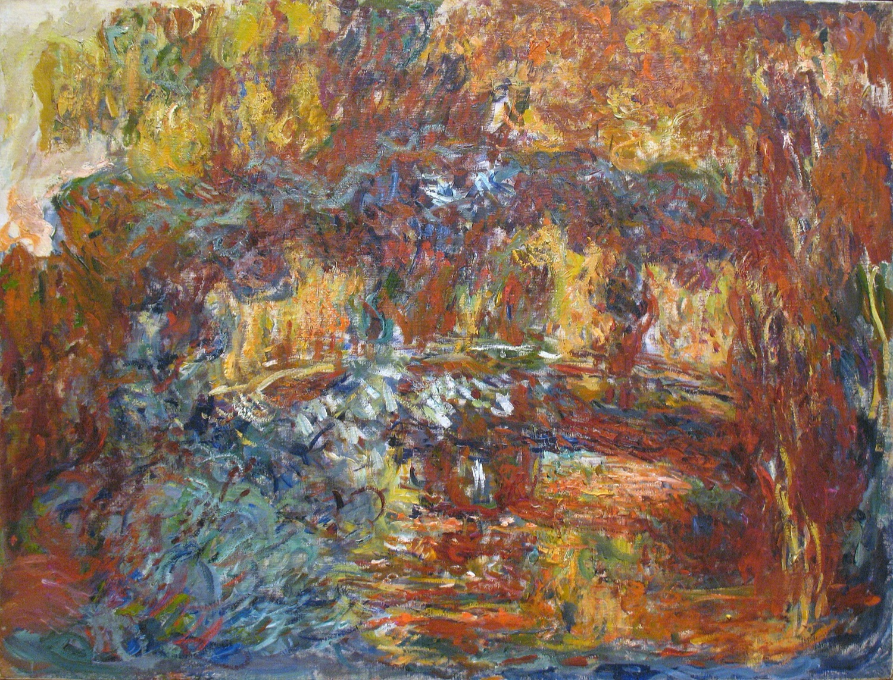

A newborn boy can produce milk. So can a newborn girl, who may also have a little vaginal bleeding. During pregnancy, hormones from the mother cross the placenta. After birth, that supply stops, and the baby's body takes time to adjust. The milk is called witch's milk.1
The toe that comes back
When a doctor strokes the sole of a baby's foot, the big toe may lift and the others spread. That's the Babinski response. It can be normal through age two, while the nerve pathway from brain to spinal cord is still maturing. In an awake adult, the same response can signal damage to that pathway, including from a stroke.2
The baby's grip has a similar history. Touch a newborn's palm and the fingers close around yours. As the brain develops, it suppresses this automatic grasp. Damage to the frontal lobes can release it again: an adult grips a hand placed in their palm and struggles to let go.3
Monet had to label his paint
A newborn sees best about 8 to 12 inches away, roughly the distance to the face of someone feeding them. Distance is blurry; color vision develops over the following months.4 Later in life, cataracts can make a familiar world blurry again and change its colors.
Monet's cataracts got bad enough that he labeled his paint tubes and kept his palette in a fixed order. He couldn't trust his eyes to choose a color. His paintings grew darker and his brushwork broader.5


After surgery on his right eye in 1923, he had the opposite complaint: everything looked too blue. With corrective glasses and time, he returned to painting and retouched some earlier work.5
How far does the pattern go?
Alzheimer's can take away abilities in roughly the reverse order a child acquires them. Its functional staging scale follows losses from choosing clothes through walking, sitting up and holding up the head.6 That describes the course of a disease. It doesn't make someone a child again, or make that course inevitable with age.
In 2025, researchers scanned awake babies while showing them photographs. From around a year old, activity in the hippocampus, a brain region involved in memory, predicted which pictures the babies later recognized.7
The experiment found evidence of memories being formed during a period most adults can't recall. It didn't establish whether those memories are erased or become inaccessible later.
Sources
- MedlinePlus: Hormonal effects in newborns. Maternal hormones, breast swelling, milk and vaginal bleeding.
- Acharya, Jamil and Dewey: Babinski reflex. Normal infant responses and interpretation in adults.
- Walker: The suck, snout, palmomental, and grasp reflexes. Infant reflexes and frontal lobe disease.
- American Academy of Pediatrics: Infant vision development. Near focus and developing color vision.
- Gruener (2015): The effect of cataracts and cataract surgery on Claude Monet. A medical history drawing on his letters and treatment records; it cannot separate eyesight from artistic choice in every painting.
- Reisberg (1988): Functional assessment staging. Reisberg and colleagues (2002): Evidence and mechanisms of retrogenesis. A framework for the usual sequence of losses in Alzheimer's, with individual variation.
- Yates and colleagues (2025): Hippocampal encoding of memories in human infants. Evidence for encoding during infancy; it doesn't establish what remains years later.